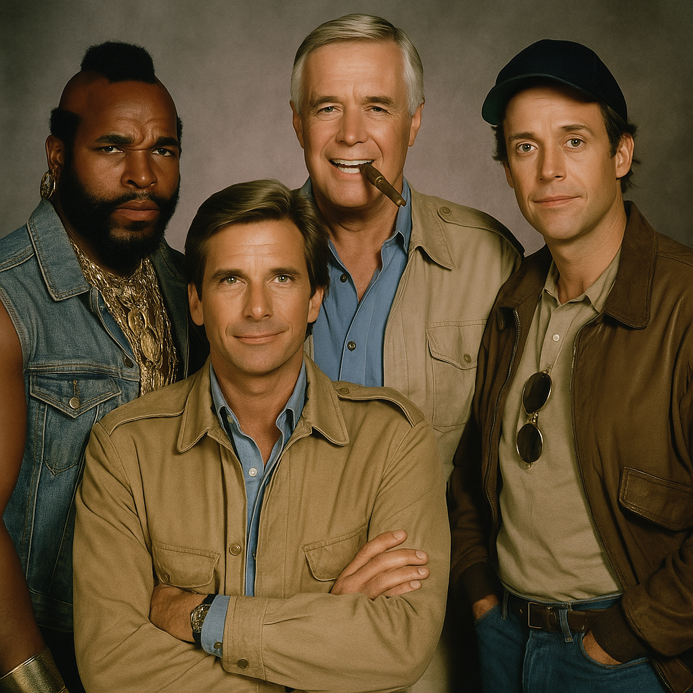
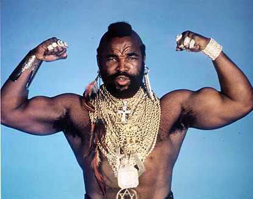
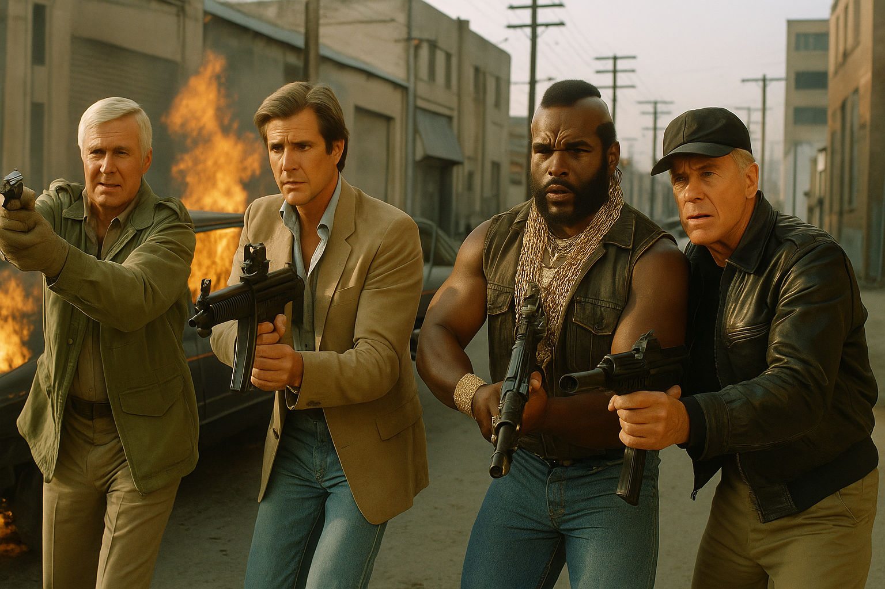

Um time de renegados com coração
Acusados injustamente, esses veteranos da Guerra do Vietnã usavam suas habilidades para ajudar os inocentes — tudo com muito carisma e explosões.

Hannibal, Face, Murdock e B.A.

Mr. T e seu famoso moicano

Aventura com humor e explosões
Com 5 temporadas entre 1983 e 1987, "Esquadrão Classe A" teve 97 episódios e um carisma único que inspirou um filme em 2010 com grandes estrelas de Hollywood.